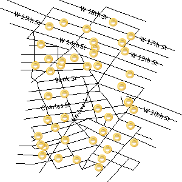
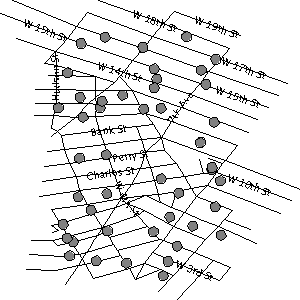
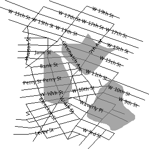

Label Obstacles¶
GeoServer는 레이블이 서로 겹치는 것을 막기 위해 레이블 충돌 해소 알고리듬을 실행합니다. 이 알고리듬은 기본적으로 레이블 사이의 충돌만을 대상으로 합니다. 따라서 레이블이 다른 심볼라이저와 겹치는 일이 발생해, 바람직하지 않은 효과를 낼 수도 있습니다.

|
GeoServer는 심볼라이저를 장애물(obstacle)로 표시할 수 있는 labelObstacle이라는 자체 옵션을 지원합니다. 이 옵션은 장애물과 겹치는 레이블을 렌더링하지 못 하도록 막습니다.
<?xml version="1.0" encoding="ISO-8859-1"?>
<StyledLayerDescriptor version="1.0.0" xmlns="http://www.opengis.net/sld" xmlns:ogc="http://www.opengis.net/ogc"
xmlns:xlink="http://www.w3.org/1999/xlink" xmlns:xsi="http://www.w3.org/2001/XMLSchema-instance">
<NamedLayer>
<UserStyle>
<FeatureTypeStyle>
<Rule>
<PointSymbolizer>
<Graphic>
<ExternalGraphic>
<OnlineResource
xlink:type="simple"
xlink:href="smileyface.png" />
<Format>image/png</Format>
</ExternalGraphic>
<Size>32</Size>
</Graphic>
<VendorOption name="labelObstacle">true</VendorOption>
</PointSymbolizer>
</Rule>
</FeatureTypeStyle>
</UserStyle>
</NamedLayer>
</StyledLayerDescriptor>

|

|
일반 포인트 스타일을 장애물로 적용하도록 합니다.
<PointSymbolizer>
<Graphic>
<ExternalGraphic>
<OnlineResource
xlink:type="simple"
xlink:href="smileyface.png" />
<Format>image/png</Format>
</ExternalGraphic>
<Size>32</Size>
</Graphic>
<VendorOption name="labelObstacle">true</VendorOption>
</PointSymbolizer>

|

|
라인/폴리곤 스타일을 장애물로 적용하도록 합니다.

|

|

|

|
경고
라인이나 폴리곤 심볼라이저를 장애물로 표시할 때 주의하십시오. 레이블 충돌 해소 루틴은 범위(bounding box)를 바탕으로 하기 때문에, 레이블 장애물로 표시할 경우 도형 자체만이 아니라 도형의 범위와 겹치는 레이블도 렌더링하지 못 합니다.